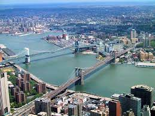
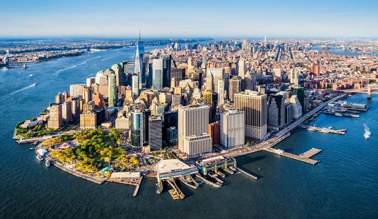
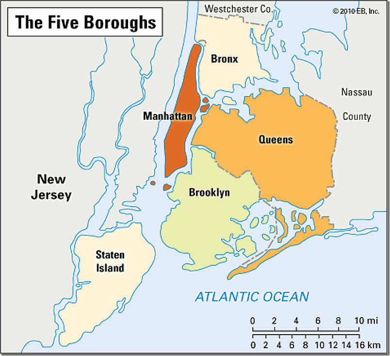
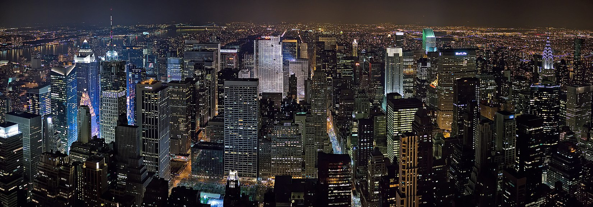
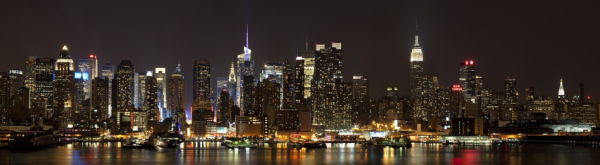

Найбільше місто у США, розташоване на Атлантичному узбережжі біля гирла річки Гудзон
 Населення
Населення — 8 175 133 особи (2010), міської агломерації — 19 млн осіб. Оцінка населення на 2018 рік — 8,4 млн осіб.
Територіальний поділ
Нью-Йорк складається з таких районів:

- Манхеттен
- Бруклін
- Квінс
- Бронкс
- Стейтен Айленд
Світське життя
Нью-Йорк
-
Один із найбільших у світі торговельно-фінансових центрів
- Нью-Йоркська фондова біржа
- транснаціональні корпорації
-
Великий промисловий центр
- одяг,
- поліграфія,
- транспортні засоби,
- продукти харчування
- Конгломератом портів Нью-Йорк сполучений системою каналів з Великими Озерами
- Великий транспортний вузол
-
Численні вищі школи
- Колумбійський університет
- Бруклінський коледж
- Нью-Йоркський університет
-
Великі парки
- Сентрал-парк
Манхеттен
Головною частиною міста Нью-Йорк є острів Мангеттен. Тут присутня велика кількість музеїв, мистецьких галерей, пам'яток архітектури XVII та XIX століть. Але найбільше острів славиться великою кількістю хмарочосів.
 